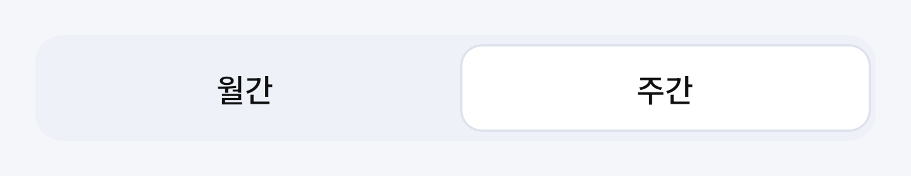
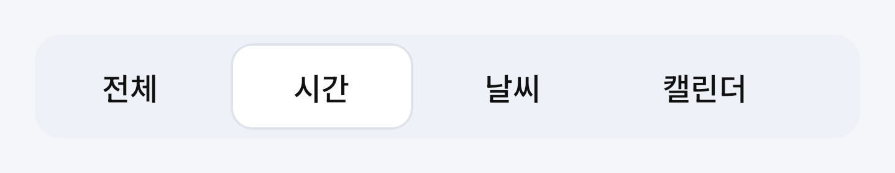
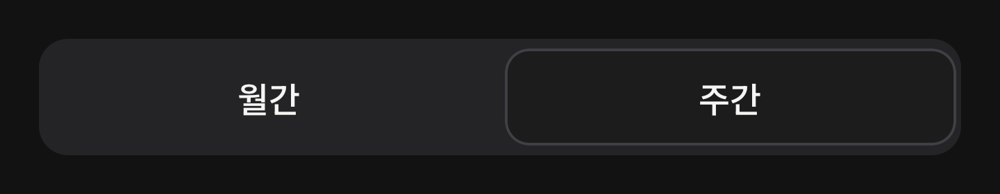
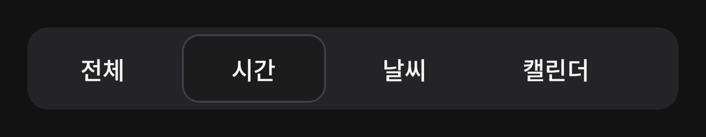

StudioSegmentedTrack
짧은 모드·탭과 길이가 고정된 스크롤 선택지에 사용합니다.
- 컴포넌트 ID
studio-segmented-track- 분류
- 선택
- 구현
StudioSegmentedTrack·MyWidget/app/src/main/java/com/mywidget/editor/core/designsystem/component/StudioSelectors.kt:186- 주요 API
- items, selectedItem, onSelected, sizing, itemEnabled, itemModifier, itemRole, itemContent
- 지원 상태
- 선택
- 미선택
- 선택 불가
- 읽기 전용 진행
- 변형
- EqualWeight
- FixedScrollable
- CompactIcon
- 세로 적층
- 크기
- 탭 기본 88dp
- 터치 높이 48dp
- 컴팩트 선택 표면 32dp·반경 8dp
- 테마·토큰
- chipSurface
- surface
- outlineVariant
- LocalStudioControlDensity
- 접근성·사용 규칙
- 선택 그룹의 Tab/RadioButton 역할을 지정하며 길이가 긴 로캘에서도 전체 설명을 유지합니다.
- 공통 사용 여부
- 도구 모드·기능 카테고리·편집 위저드·정렬·텍스트 굵기 등에서 사용
- 설계 품질
- 공통 트랙과 폭 선택만 소유함
- 판단
- 유지
- 판단 근거
- 탐색·동작 선택과 복수 체크는 각각 별도의 의미 규칙을 유지합니다.
- 구현·문서
- 현재 소스 위치와 심볼 확인
- 렌더링
- 네이티브 캡처 있음
코드 예시
val choices = listOf("전체", "시간", "날씨", "캘린더", "건강", "메모")
StudioSegmentedTrack(choices, "시간", {}, sizing = StudioSegmentSizing.FixedScrollable()) { item, _ -> Text(item) }Android 네이티브 예시
아래 캡처에 표시된 상태와 기기 조건을 확인했습니다.

411 × 891 dp · 560 dpi · 글꼴 1배 · API 35 · ko-KR
캡처 기준 HEAD
28c96a452 · 소스 지문 2926a62326fe · 2026-11-13T13:54:53.964821Z
411 × 891 dp · 560 dpi · 글꼴 1배 · API 35 · ko-KR
캡처 기준 HEAD
28c96a452 · 소스 지문 2926a62326fe · 2026-11-13T13:54:53.964821Z
411 × 891 dp · 560 dpi · 글꼴 1배 · API 35 · ko-KR
캡처 기준 HEAD
28c96a452 · 소스 지문 2926a62326fe · 2026-11-13T13:54:53.964821Z
411 × 891 dp · 560 dpi · 글꼴 1배 · API 35 · ko-KR
캡처 기준 HEAD
28c96a452 · 소스 지문 2926a62326fe · 2026-11-13T13:54:53.964821Z사용 화면
- 배경·테두리 인스펙터
- 프레임 손그림
- 텍스트 인스펙터
- 글자 상세와 세부 조판
- 색상·그라데이션 팔레트
- 데이터 인스펙터
- 모양 인스펙터
- 레이어 인스펙터
- 위젯 크기 개요·초기화
- 목록 편집·표시·체크 설정
- 목록 항목과 템플릿
- 아이콘 라이브러리·관리
- 직접 아이콘 그리기
- 이미지 관리와 표시
- 수동 목표 편집
- 기능 연결 카탈로그
- 오늘의 진행률
- 달력 연결 설정
- 손글씨 메모 연결
- 위젯 값 읽을 블록
- 위젯 값의 속성·표시 옵션
- 터치 동작 1단계 · 대상
- 터치 동작 2단계 · 상태
- 터치 동작 3단계 · 액션
- 목록 항목 삭제 액션
- 설치 위젯 기능 연결 옵션
- 설치 위젯 기본 아이콘 편집
- 디자인 시스템 쇼케이스